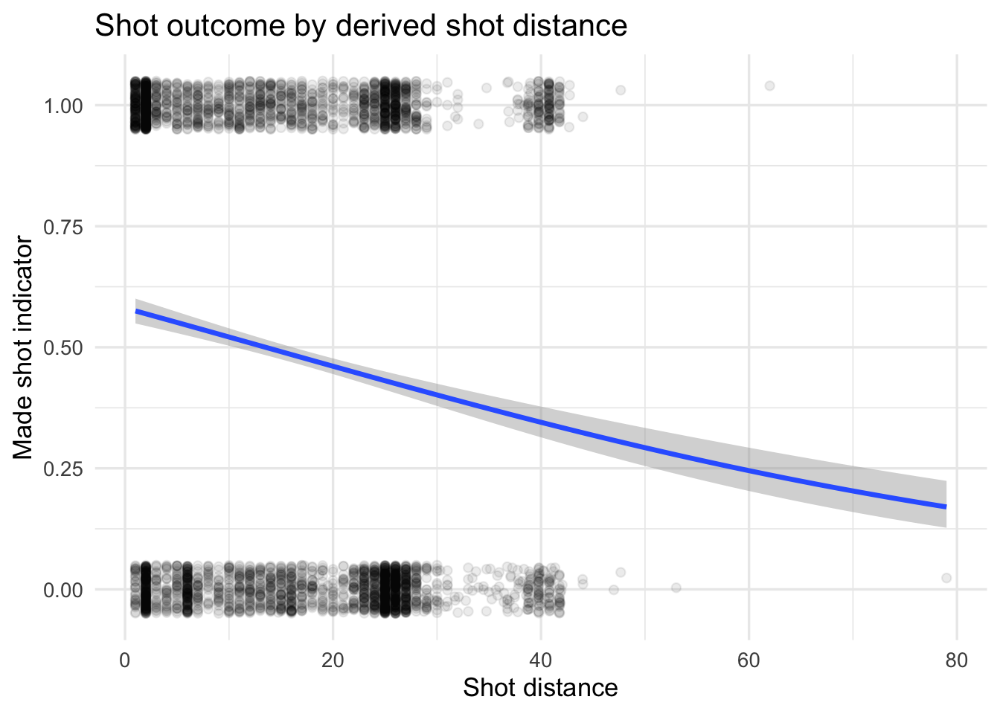
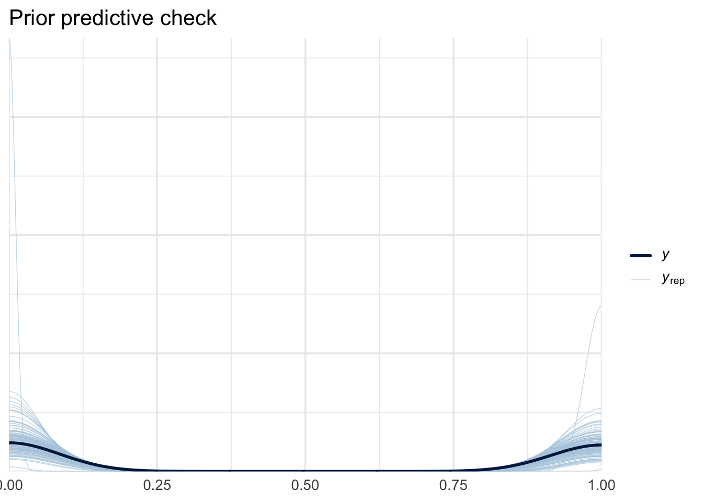
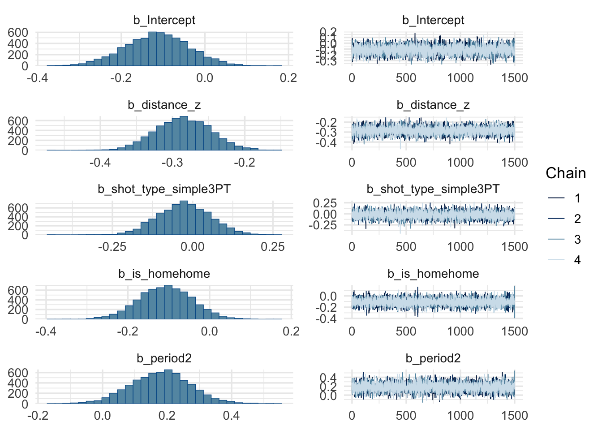
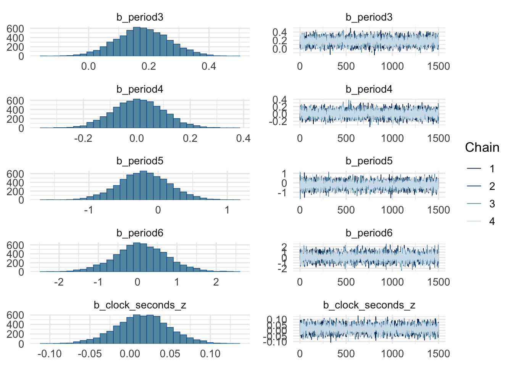
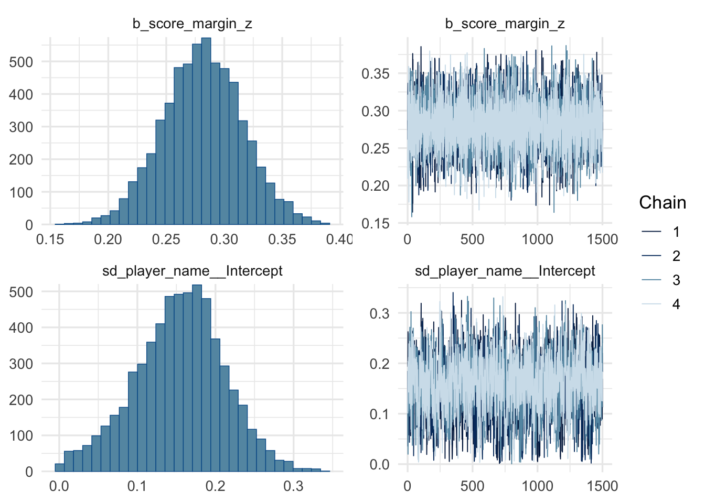
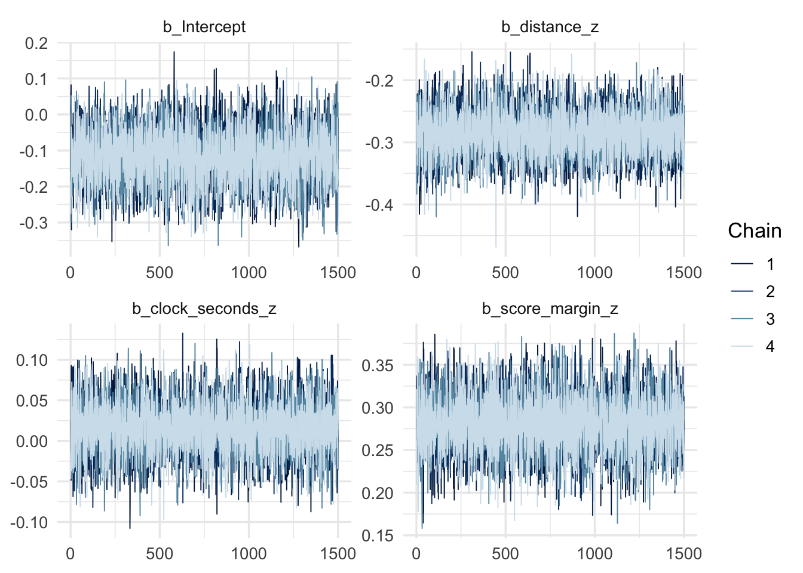
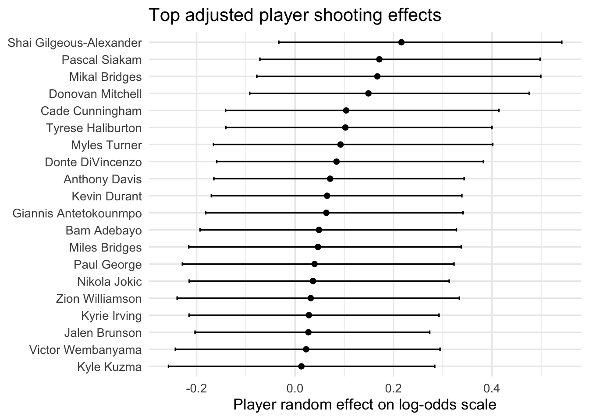
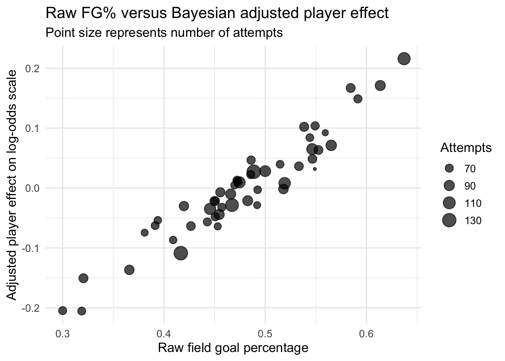
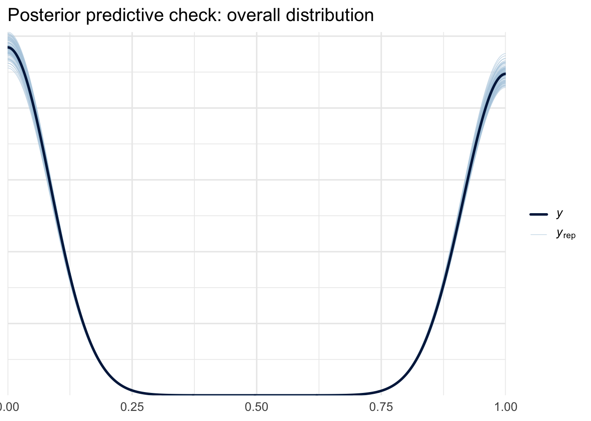
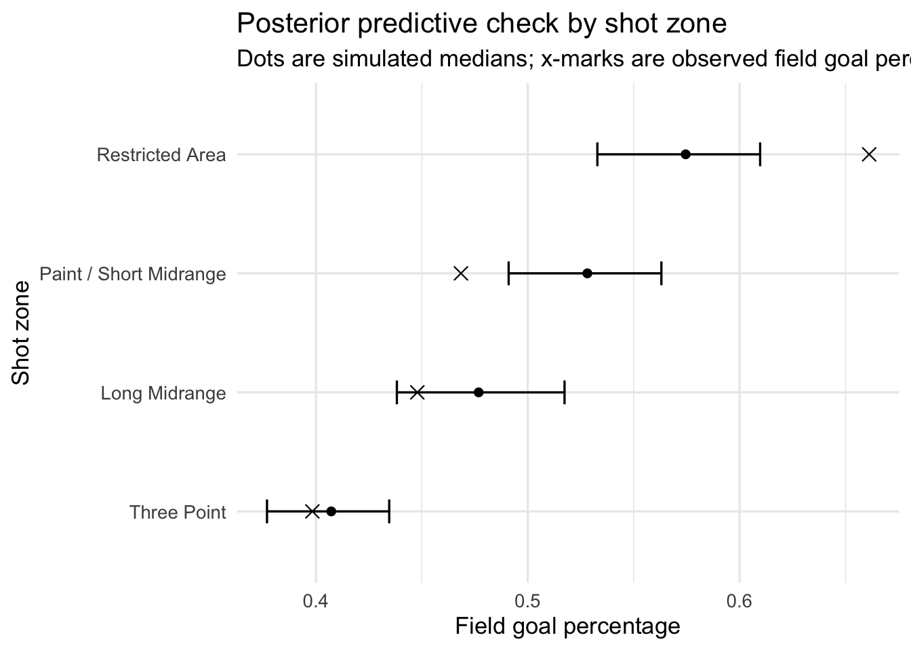

Code
library(tidyverse)
library(hoopR)
library(brms)
library(bayesplot)
library(posterior)
library(lme4)
library(broom.mixed)
library(loo)
library(gt)
library(janitor)
library(forcats)
library(purrr)In basketball, a shot attempt is not equally difficult for every player or every situation. A layup, a short midrange jumper, and a three-point attempt have very different expected outcomes. At the same time, players differ in their individual shooting ability, and players with only a small number of attempts are difficult to evaluate from raw field goal percentage alone.
Our research question is:
How do shot context and player-specific ability affect the probability that an NBA player makes a field goal attempt?
We analyze shot-level NBA data using a Bayesian hierarchical logistic regression model. The response variable is whether a shot was made. The main predictors are shot distance, shot type, a derived shot zone, period, time remaining in the period, score margin, home/away status, and player identity. The hierarchical part of the model allows each player to have their own shooting ability parameter while partially pooling players toward the league average. This is useful because players with fewer attempts should not be treated as if their observed field goal percentage is as reliable as that of high-volume shooters.
The main goals are:
For each shot attempt (i = 1, , n), define
\[ Y_i = \begin{cases} 1, & \text{if shot } i \text{ was made} \\ 0, & \text{if shot } i \text{ was missed.} \end{cases} \]
We model
\[ Y_i \mid p_i \sim \text{Bernoulli}(p_i), \]
where (p_i) is the probability that shot (i) is made.
Because (p_i) must lie between 0 and 1, we use a logistic regression model:
\[ \text{logit}(p_i) = \log\left(\frac{p_i}{1-p_i}\right) = \eta_i. \]
A non-hierarchical model would use
\[ \eta_i = \alpha + \beta_1 \,\text{distance}_{z,i} + \beta_2 \, I(\text{3PT}_i) + \beta_3 \, I(\text{home}_i) + \beta_4 \,\text{period}_i + \beta_5 \,\text{zone}_i + \beta_6 \,\text{clock}_{z,i} + \beta_7 \,\text{margin}_{z,i}. \]
However, this ignores player-to-player variation. We instead use a hierarchical model:
\[ \eta_i = \alpha + u_{\text{player}[i]} + \beta_1 \,\text{distance}_{z,i} + \beta_2 \, I(\text{3PT}_i) + \beta_3 \, I(\text{home}_i) + \beta_4 \,\text{period}_i + \beta_5 \,\text{zone}_i + \beta_6 \,\text{clock}_{z,i} + \beta_7 \,\text{margin}_{z,i}. \]
The player effects are modeled as
\[ u_j \sim \text{Normal}(0, \sigma_{\text{player}}), \]
where (u_j) is the adjusted shooting ability of player (j), and (_{}) describes how much true shooting ability varies across players after controlling for shot context.
This model is Bayesian because we specify priors for all unknown parameters and use posterior inference:
\[ p(\theta \mid y) \propto p(y \mid \theta)p(\theta), \]
where (p(y )) is the likelihood and (p()) is the prior distribution.
This project goes beyond a standard logistic regression because it uses a hierarchical Bayesian model. The Bayesian framework is especially useful here for three reasons.
First, the model estimates uncertainty directly using posterior distributions, not just point estimates and standard errors.
Second, partial pooling helps stabilize player estimates. A player who makes 6 out of 10 shots should not necessarily be estimated as a better shooter than a player who makes 420 out of 900 shots. The hierarchical prior shrinks low-information players toward the league average.
Third, Bayesian posterior prediction allows us to answer practical questions such as:
library(tidyverse)
library(hoopR)
library(brms)
library(bayesplot)
library(posterior)
library(lme4)
library(broom.mixed)
library(loo)
library(gt)
library(janitor)
library(forcats)
library(purrr)theme_set(theme_minimal(base_size = 13))
options(mc.cores = parallel::detectCores())
set.seed(415)We use NBA play-by-play data accessed through the hoopR package. The function load_nba_pbp() provides play-level data from ESPN, including shot outcomes, shot coordinates, period, clock, score, and player IDs. We also use load_nba_player_box() to recover player display names from player IDs when that lookup is available.
This project proposal originally described using Basketball Reference, but the hoopR play-by-play data is a better match for a hierarchical shot-level model because it provides consistent shot-level coordinates and game context.
The code below pulls NBA play-by-play data and filters it down to field goal attempts. The ESPN play-by-play file in hoopR does not contain a stable athlete_display_name_1 column, so player names are joined separately using load_nba_player_box(). If that lookup fails, the code falls back to labels based on player ID.
The play-by-play file also does not contain a direct shot_distance column in your session, so we derive an approximate shot distance from the play text when possible, and otherwise use shot coordinates as a fallback.
season_used <- 2024
pbp_raw <- load_nba_pbp(seasons = season_used) |>
clean_names()
player_lookup <- tryCatch(
load_nba_player_box(seasons = season_used) |>
clean_names() |>
distinct(athlete_id, athlete_display_name),
error = function(e) {
tibble(
athlete_id = integer(),
athlete_display_name = character()
)
}
)
shots_raw <- pbp_raw |>
mutate(
shot_text = str_to_lower(coalesce(text, "")),
parsed_distance = str_extract(shot_text, "\\d+(?=-foot)") |> as.numeric(),
coord_distance = sqrt(coordinate_x^2 + coordinate_y^2),
shot_distance = case_when(
!is.na(parsed_distance) ~ parsed_distance,
str_detect(shot_text, "dunk") ~ 1,
str_detect(shot_text, "layup|tip shot|tip-in") ~ 2,
str_detect(shot_text, "hook shot|floating") ~ 6,
TRUE ~ coord_distance
)
) |>
filter(
shooting_play == TRUE,
!str_detect(shot_text, "free throw"),
!is.na(athlete_id_1),
!is.na(team_id),
!is.na(home_team_id),
!is.na(away_team_id),
!is.na(coordinate_x),
!is.na(coordinate_y),
!is.na(period_number),
!is.na(clock_minutes),
!is.na(clock_seconds),
!is.na(home_score),
!is.na(away_score),
!is.na(shot_distance)
) |>
transmute(
made = as.integer(scoring_play == TRUE),
player_id = athlete_id_1,
team_id = team_id,
period = period_number,
is_home = case_when(
team_id == home_team_id ~ "home",
team_id == away_team_id ~ "away",
TRUE ~ NA_character_
),
shot_distance = shot_distance,
coordinate_x = coordinate_x,
coordinate_y = coordinate_y,
shot_type_simple = case_when(
score_value == 3 ~ "3PT",
score_value == 2 ~ "2PT",
str_detect(shot_text, "three point|3-pt|3pt") ~ "3PT",
TRUE ~ "2PT"
),
shot_zone_basic = case_when(
shot_distance <= 4 ~ "Restricted Area",
shot_distance <= 14 ~ "Paint / Short Midrange",
shot_distance <= 22 ~ "Long Midrange",
TRUE ~ "Three Point"
),
score_margin = case_when(
team_id == home_team_id ~ home_score - away_score,
team_id == away_team_id ~ away_score - home_score,
TRUE ~ NA_real_
),
clock_seconds_remaining = clock_minutes * 60 + clock_seconds,
game_date = game_date
) |>
filter(!is.na(is_home), !is.na(score_margin)) |>
left_join(player_lookup, by = c("player_id" = "athlete_id")) |>
mutate(
player_name = coalesce(athlete_display_name, paste("Player", player_id))
) |>
select(
made,
player_id,
player_name,
period,
is_home,
shot_distance,
coordinate_x,
coordinate_y,
shot_type_simple,
shot_zone_basic,
score_margin,
clock_seconds_remaining,
game_date
)glimpse(shots_raw)Rows: 234,063
Columns: 13
$ made <int> 1, 0, 0, 0, 0, 0, 0, 0, 1, 0, 1, 0, 0, 1, 0, 0…
$ player_id <int> 3995, 3945274, 3917376, 4065648, 3917376, 6442…
$ player_name <chr> "Jrue Holiday", "Luka Doncic", "Jaylen Brown",…
$ period <int> 1, 1, 1, 1, 1, 1, 1, 1, 1, 1, 1, 1, 1, 1, 1, 1…
$ is_home <chr> "home", "away", "home", "home", "home", "away"…
$ shot_distance <dbl> 2.00000, 27.00000, 31.00000, 38.58837, 24.0000…
$ coordinate_x <dbl> 40.75, -15.75, 9.75, 37.75, 27.75, -14.75, 34.…
$ coordinate_y <dbl> 0, 10, -2, 8, 21, 6, 7, -14, 0, 18, 0, -14, 4,…
$ shot_type_simple <chr> "2PT", "2PT", "3PT", "2PT", "3PT", "3PT", "2PT…
$ shot_zone_basic <chr> "Restricted Area", "Three Point", "Three Point…
$ score_margin <dbl> 2, -2, 2, 2, 2, -2, 2, -2, 4, -4, -2, 2, -2, 4…
$ clock_seconds_remaining <dbl> 700, 683, 665, 646, 643, 626, 610, 595, 574, 5…
$ game_date <date> 2024-06-17, 2024-06-17, 2024-06-17, 2024-06-1…To keep the project computationally reasonable and statistically interpretable, we restrict to players with at least a moderate number of attempts and then sample a few thousand shots. This still leaves enough data for a meaningful hierarchical model while avoiding a huge data set where posterior intervals become extremely small.
player_counts <- shots_raw |>
count(player_name, name = "attempts") |>
arrange(desc(attempts))
players_keep <- player_counts |>
filter(attempts >= 60) |>
slice_head(n = 50) |>
pull(player_name)
shots_filtered <- shots_raw |>
filter(player_name %in% players_keep)
shots_model <- shots_filtered |>
slice_sample(n = min(4000, nrow(shots_filtered))) |>
mutate(
distance_z = as.numeric(scale(shot_distance)),
score_margin_z = as.numeric(scale(score_margin)),
clock_seconds_z = as.numeric(scale(clock_seconds_remaining)),
player_name = factor(player_name),
shot_type_simple = factor(shot_type_simple, levels = c("2PT", "3PT")),
shot_zone_basic = factor(
shot_zone_basic,
levels = c(
"Restricted Area",
"Paint / Short Midrange",
"Long Midrange",
"Three Point"
)
),
is_home = factor(is_home, levels = c("away", "home")),
period = factor(period)
) |>
droplevels()
glimpse(shots_model)Rows: 4,000
Columns: 16
$ made <int> 0, 0, 0, 0, 1, 1, 1, 0, 0, 1, 0, 1, 1, 1, 0, 0…
$ player_id <int> 4431678, 3936299, 1966, 3112335, 3945274, 6442…
$ player_name <fct> Tyrese Maxey, Jamal Murray, LeBron James, Niko…
$ period <fct> 3, 1, 1, 2, 2, 1, 2, 4, 4, 3, 3, 2, 2, 1, 4, 3…
$ is_home <fct> home, home, home, home, home, home, away, away…
$ shot_distance <dbl> 27.00, 2.00, 8.00, 13.00, 3.00, 26.00, 12.00, …
$ coordinate_x <dbl> 15.75, 40.75, 38.75, 28.75, 37.75, 22.75, -29.…
$ coordinate_y <dbl> 11, -1, 8, -4, -1, 18, -5, -10, -11, 7, -3, 0,…
$ shot_type_simple <fct> 3PT, 2PT, 2PT, 2PT, 2PT, 3PT, 2PT, 3PT, 2PT, 3…
$ shot_zone_basic <fct> Three Point, Restricted Area, Paint / Short Mi…
$ score_margin <dbl> 2, 8, -7, -2, -6, 9, 9, 1, 5, -16, 14, 10, 12,…
$ clock_seconds_remaining <dbl> 273.0, 336.0, 593.0, 309.0, 371.0, 578.0, 197.…
$ game_date <date> 2023-12-08, 2024-01-05, 2023-12-25, 2023-12-2…
$ distance_z <dbl> 0.8611056, -1.2614973, -0.7520726, -0.3275520,…
$ score_margin_z <dbl> 0.07080705, 0.64902043, -0.79651303, -0.314668…
$ clock_seconds_z <dbl> -0.40978479, -0.10205503, 1.15328700, -0.23393…shots_model |>
summarize(
n_shots = n(),
made_shots = sum(made),
fg_pct = mean(made)
) |>
gt()| n_shots | made_shots | fg_pct |
|---|---|---|
| 4000 | 1921 | 0.48025 |
shots_model |>
group_by(shot_type_simple) |>
summarize(
n = n(),
fg_pct = mean(made),
.groups = "drop"
) |>
gt()| shot_type_simple | n | fg_pct |
|---|---|---|
| 2PT | 2768 | 0.5068642 |
| 3PT | 1232 | 0.4204545 |
shots_model |>
group_by(shot_zone_basic) |>
summarize(
n = n(),
fg_pct = mean(made),
.groups = "drop"
) |>
arrange(desc(fg_pct)) |>
gt()| shot_zone_basic | n | fg_pct |
|---|---|---|
| Restricted Area | 912 | 0.6611842 |
| Paint / Short Midrange | 888 | 0.4684685 |
| Long Midrange | 518 | 0.4478764 |
| Three Point | 1682 | 0.3983353 |
ggplot(shots_model, aes(x = shot_distance, y = made)) +
geom_jitter(height = 0.05, alpha = 0.08) +
geom_smooth(
method = "glm",
method.args = list(family = binomial),
se = TRUE
) +
labs(
title = "Shot outcome by derived shot distance",
x = "Shot distance",
y = "Made shot indicator"
)
player_raw <- shots_model |>
group_by(player_name) |>
summarize(
attempts = n(),
makes = sum(made),
raw_fg_pct = mean(made),
.groups = "drop"
) |>
arrange(desc(raw_fg_pct))
player_raw |>
slice_head(n = 15) |>
gt()| player_name | attempts | makes | raw_fg_pct |
|---|---|---|---|
| Shai Gilgeous-Alexander | 113 | 72 | 0.6371681 |
| Pascal Siakam | 88 | 54 | 0.6136364 |
| Donovan Mitchell | 71 | 42 | 0.5915493 |
| Mikal Bridges | 77 | 45 | 0.5844156 |
| Anthony Davis | 92 | 52 | 0.5652174 |
| Myles Turner | 59 | 33 | 0.5593220 |
| Giannis Antetokounmpo | 76 | 42 | 0.5526316 |
| Cade Cunningham | 71 | 39 | 0.5492958 |
| Zion Williamson | 51 | 28 | 0.5490196 |
| Bam Adebayo | 75 | 41 | 0.5466667 |
| Kevin Durant | 97 | 53 | 0.5463918 |
| Donte DiVincenzo | 68 | 37 | 0.5441176 |
| Tyrese Haliburton | 78 | 42 | 0.5384615 |
| Nikola Jokic | 75 | 40 | 0.5333333 |
| Jayson Tatum | 104 | 54 | 0.5192308 |
For shot (i),
\[ Y_i \sim \text{Bernoulli}(p_i). \]
Our main model is
\[ \text{logit}(p_i) = \alpha + u_{\text{player}[i]} + \beta_1 \,\text{distance}_{z,i} + \beta_2 I(\text{3PT}_i) + \beta_3 I(\text{home}_i) + \beta_4 \,\text{period}_i + \beta_5 \,\text{clock}_{z,i} + \beta_6 \,\text{margin}_{z,i}. \]
The player random effect is
\[ u_j \sim \text{Normal}(0, \sigma_{\text{player}}). \]
The interpretation of (u_j) is the player’s adjusted shooting ability after controlling for shot distance, shot type, period, time remaining, score margin, and home/away status.
We use weakly informative priors.
The intercept receives
\[ \alpha \sim \text{Normal}(0, 1.5). \]
On the probability scale, this prior allows a wide range of baseline shooting probabilities. Since NBA field goal percentages are often around 40% to 50%, this is weak but still reasonable.
Regression coefficients receive
\[ \beta_k \sim \text{Normal}(0, 1). \]
A coefficient of 1 on the log-odds scale corresponds to an odds ratio of (e^1 ), so this prior allows substantial effects while discouraging implausibly extreme ones.
The player standard deviation receives
\[ \sigma_{\text{player}} \sim \text{Exponential}(1). \]
This prior favors smaller between-player variation but still permits substantial heterogeneity if supported by the data.
model_formula <- bf(
made ~ distance_z + shot_type_simple + is_home + period +
clock_seconds_z + score_margin_z + (1 | player_name)
)
model_formula_fixed <- bf(
made ~ distance_z + shot_type_simple + is_home + period +
clock_seconds_z + score_margin_z
)
priors_main <- c(
prior(normal(0, 1.5), class = "Intercept"),
prior(normal(0, 1), class = "b"),
prior(exponential(1), class = "sd")
)
priors_fixed_only <- c(
prior(normal(0, 1.5), class = "Intercept"),
prior(normal(0, 1), class = "b")
)
priors_main prior class coef group resp dpar nlpar lb ub tag source
normal(0, 1.5) Intercept <NA> <NA> user
normal(0, 1) b <NA> <NA> user
exponential(1) sd <NA> <NA> userBefore fitting the model to the observed outcomes, we check whether the priors imply reasonable shot-making rates.
fit_prior <- brm(
formula = model_formula,
data = shots_model,
family = bernoulli(link = "logit"),
prior = priors_main,
sample_prior = "only",
chains = 4,
iter = 1000,
seed = 415,
control = list(adapt_delta = 0.95)
)Running /Library/Frameworks/R.framework/Resources/bin/R CMD SHLIB foo.c
using C compiler: ‘Apple clang version 17.0.0 (clang-1700.0.13.5)’
using SDK: ‘MacOSX15.5.sdk’
clang -arch arm64 -std=gnu2x -I"/Library/Frameworks/R.framework/Resources/include" -DNDEBUG -I"/Library/Frameworks/R.framework/Versions/4.5-arm64/Resources/library/Rcpp/include/" -I"/Library/Frameworks/R.framework/Versions/4.5-arm64/Resources/library/RcppEigen/include/" -I"/Library/Frameworks/R.framework/Versions/4.5-arm64/Resources/library/RcppEigen/include/unsupported" -I"/Library/Frameworks/R.framework/Versions/4.5-arm64/Resources/library/BH/include" -I"/Library/Frameworks/R.framework/Versions/4.5-arm64/Resources/library/StanHeaders/include/src/" -I"/Library/Frameworks/R.framework/Versions/4.5-arm64/Resources/library/StanHeaders/include/" -I"/Library/Frameworks/R.framework/Versions/4.5-arm64/Resources/library/RcppParallel/include/" -I"/Library/Frameworks/R.framework/Versions/4.5-arm64/Resources/library/rstan/include" -DEIGEN_NO_DEBUG -DBOOST_DISABLE_ASSERTS -DBOOST_PENDING_INTEGER_LOG2_HPP -DSTAN_THREADS -DUSE_STANC3 -DSTRICT_R_HEADERS -DBOOST_PHOENIX_NO_VARIADIC_EXPRESSION -D_HAS_AUTO_PTR_ETC=0 -include '/Library/Frameworks/R.framework/Versions/4.5-arm64/Resources/library/StanHeaders/include/stan/math/prim/fun/Eigen.hpp' -D_REENTRANT -DRCPP_PARALLEL_USE_TBB=1 -I/opt/R/arm64/include -fPIC -falign-functions=64 -Wall -g -O2 -c foo.c -o foo.o
In file included from <built-in>:1:
In file included from /Library/Frameworks/R.framework/Versions/4.5-arm64/Resources/library/StanHeaders/include/stan/math/prim/fun/Eigen.hpp:22:
In file included from /Library/Frameworks/R.framework/Versions/4.5-arm64/Resources/library/RcppEigen/include/Eigen/Dense:1:
In file included from /Library/Frameworks/R.framework/Versions/4.5-arm64/Resources/library/RcppEigen/include/Eigen/Core:19:
/Library/Frameworks/R.framework/Versions/4.5-arm64/Resources/library/RcppEigen/include/Eigen/src/Core/util/Macros.h:679:10: fatal error: 'cmath' file not found
679 | #include <cmath>
| ^~~~~~~
1 error generated.
make: *** [foo.o] Error 1pp_check(fit_prior, ndraws = 100) +
labs(title = "Prior predictive check")
fit_bayes <- brm(
formula = model_formula,
data = shots_model,
family = bernoulli(link = "logit"),
prior = priors_main,
sample_prior = "yes",
chains = 4,
iter = 2500,
warmup = 1000,
seed = 415,
control = list(adapt_delta = 0.97, max_treedepth = 12)
)Running /Library/Frameworks/R.framework/Resources/bin/R CMD SHLIB foo.c
using C compiler: ‘Apple clang version 17.0.0 (clang-1700.0.13.5)’
using SDK: ‘MacOSX15.5.sdk’
clang -arch arm64 -std=gnu2x -I"/Library/Frameworks/R.framework/Resources/include" -DNDEBUG -I"/Library/Frameworks/R.framework/Versions/4.5-arm64/Resources/library/Rcpp/include/" -I"/Library/Frameworks/R.framework/Versions/4.5-arm64/Resources/library/RcppEigen/include/" -I"/Library/Frameworks/R.framework/Versions/4.5-arm64/Resources/library/RcppEigen/include/unsupported" -I"/Library/Frameworks/R.framework/Versions/4.5-arm64/Resources/library/BH/include" -I"/Library/Frameworks/R.framework/Versions/4.5-arm64/Resources/library/StanHeaders/include/src/" -I"/Library/Frameworks/R.framework/Versions/4.5-arm64/Resources/library/StanHeaders/include/" -I"/Library/Frameworks/R.framework/Versions/4.5-arm64/Resources/library/RcppParallel/include/" -I"/Library/Frameworks/R.framework/Versions/4.5-arm64/Resources/library/rstan/include" -DEIGEN_NO_DEBUG -DBOOST_DISABLE_ASSERTS -DBOOST_PENDING_INTEGER_LOG2_HPP -DSTAN_THREADS -DUSE_STANC3 -DSTRICT_R_HEADERS -DBOOST_PHOENIX_NO_VARIADIC_EXPRESSION -D_HAS_AUTO_PTR_ETC=0 -include '/Library/Frameworks/R.framework/Versions/4.5-arm64/Resources/library/StanHeaders/include/stan/math/prim/fun/Eigen.hpp' -D_REENTRANT -DRCPP_PARALLEL_USE_TBB=1 -I/opt/R/arm64/include -fPIC -falign-functions=64 -Wall -g -O2 -c foo.c -o foo.o
In file included from <built-in>:1:
In file included from /Library/Frameworks/R.framework/Versions/4.5-arm64/Resources/library/StanHeaders/include/stan/math/prim/fun/Eigen.hpp:22:
In file included from /Library/Frameworks/R.framework/Versions/4.5-arm64/Resources/library/RcppEigen/include/Eigen/Dense:1:
In file included from /Library/Frameworks/R.framework/Versions/4.5-arm64/Resources/library/RcppEigen/include/Eigen/Core:19:
/Library/Frameworks/R.framework/Versions/4.5-arm64/Resources/library/RcppEigen/include/Eigen/src/Core/util/Macros.h:679:10: fatal error: 'cmath' file not found
679 | #include <cmath>
| ^~~~~~~
1 error generated.
make: *** [foo.o] Error 1summary(fit_bayes) Family: bernoulli
Links: mu = logit
Formula: made ~ distance_z + shot_type_simple + is_home + period + clock_seconds_z + score_margin_z + (1 | player_name)
Data: shots_model (Number of observations: 4000)
Draws: 4 chains, each with iter = 2500; warmup = 1000; thin = 1;
total post-warmup draws = 6000
Multilevel Hyperparameters:
~player_name (Number of levels: 50)
Estimate Est.Error l-95% CI u-95% CI Rhat Bulk_ESS Tail_ESS
sd(Intercept) 0.15 0.06 0.03 0.26 1.00 1442 1912
Regression Coefficients:
Estimate Est.Error l-95% CI u-95% CI Rhat Bulk_ESS Tail_ESS
Intercept -0.11 0.08 -0.27 0.03 1.00 6271 4656
distance_z -0.29 0.04 -0.36 -0.21 1.00 7739 5190
shot_type_simple3PT -0.03 0.08 -0.18 0.13 1.00 7406 4950
is_homehome -0.11 0.07 -0.24 0.02 1.00 11302 4049
period2 0.18 0.09 -0.00 0.36 1.00 6751 4816
period3 0.18 0.09 0.01 0.35 1.00 6273 5078
period4 0.01 0.09 -0.17 0.19 1.00 7283 4725
period5 -0.21 0.36 -0.93 0.51 1.00 8868 4480
period6 0.09 0.66 -1.22 1.43 1.00 9758 4171
clock_seconds_z 0.02 0.03 -0.05 0.08 1.00 10191 4748
score_margin_z 0.28 0.03 0.21 0.35 1.00 9974 4477
Draws were sampled using sampling(NUTS). For each parameter, Bulk_ESS
and Tail_ESS are effective sample size measures, and Rhat is the potential
scale reduction factor on split chains (at convergence, Rhat = 1).We check standard MCMC diagnostics, including trace plots, (), and effective sample size.
plot(fit_bayes)


draws_array <- as.array(fit_bayes)
mcmc_trace(
draws_array,
pars = c(
"b_Intercept",
"b_distance_z",
"b_clock_seconds_z",
"b_score_margin_z"
)
)
draws_df <- as_draws_df(fit_bayes)
diag_summary <- posterior::summarise_draws(
draws_df,
posterior::rhat,
posterior::ess_bulk,
posterior::ess_tail
) |>
rename(parameter = variable)
rhat_col <- names(diag_summary)[str_detect(names(diag_summary), regex("rhat", ignore_case = TRUE))][1]
ess_bulk_col <- names(diag_summary)[str_detect(names(diag_summary), regex("ess_bulk", ignore_case = TRUE))][1]
ess_tail_col <- names(diag_summary)[str_detect(names(diag_summary), regex("ess_tail", ignore_case = TRUE))][1]
diag_summary <- diag_summary |>
rename(
rhat_value = all_of(rhat_col),
ess_bulk_value = all_of(ess_bulk_col),
ess_tail_value = all_of(ess_tail_col)
) |>
filter(str_detect(parameter, "^(b_|sd_|r_)")) |>
arrange(desc(rhat_value))
diag_summary |>
slice_head(n = 20) |>
gt()| parameter | rhat_value | ess_bulk_value | ess_tail_value |
|---|---|---|---|
| r_player_name[D'Angelo.Russell,Intercept] | 1.005637 | 9860.098 | 4496.424 |
| r_player_name[Kawhi.Leonard,Intercept] | 1.004575 | 6575.166 | 3860.766 |
| r_player_name[Zion.Williamson,Intercept] | 1.003337 | 10048.140 | 4324.395 |
| sd_player_name__Intercept | 1.002486 | 1442.384 | 1911.561 |
| r_player_name[Karl-Anthony.Towns,Intercept] | 1.002407 | 9726.245 | 5011.179 |
| r_player_name[Cam.Thomas,Intercept] | 1.002388 | 7382.953 | 4476.185 |
| r_player_name[Jordan.Poole,Intercept] | 1.002332 | 7871.050 | 4725.884 |
| r_player_name[Myles.Turner,Intercept] | 1.002248 | 6420.959 | 4589.556 |
| r_player_name[Pascal.Siakam,Intercept] | 1.002145 | 3731.055 | 4591.105 |
| r_player_name[Donovan.Mitchell,Intercept] | 1.002077 | 4618.322 | 4736.062 |
| r_player_name[Paul.George,Intercept] | 1.002066 | 8827.198 | 4720.277 |
| r_player_name[Michael.Porter.Jr.,Intercept] | 1.002031 | 9469.051 | 4110.012 |
| r_player_name[De'Aaron.Fox,Intercept] | 1.002027 | 9523.398 | 4454.258 |
| b_shot_type_simple3PT | 1.001779 | 7406.485 | 4950.139 |
| r_player_name[Nikola.Jokic,Intercept] | 1.001750 | 9171.258 | 4606.445 |
| r_player_name[Tyrese.Haliburton,Intercept] | 1.001674 | 6583.105 | 5078.166 |
| r_player_name[Miles.Bridges,Intercept] | 1.001673 | 8991.837 | 4418.288 |
| r_player_name[Jalen.Brunson,Intercept] | 1.001555 | 9304.510 | 4527.176 |
| r_player_name[Devin.Booker,Intercept] | 1.001531 | 8634.354 | 4601.477 |
| b_period5 | 1.001460 | 8868.176 | 4480.283 |
A well-fit model should have () values close to 1.00 and no obvious trace plot pathologies. If there are divergent transitions, we would increase adapt_delta, simplify the model, or reconsider the parameterization.
fixef(fit_bayes) |>
as.data.frame() |>
rownames_to_column("parameter") |>
gt()| parameter | Estimate | Est.Error | Q2.5 | Q97.5 |
|---|---|---|---|---|
| Intercept | -0.114653410 | 0.07621060 | -0.266672168 | 0.03347037 |
| distance_z | -0.285107716 | 0.03830981 | -0.359241875 | -0.21009125 |
| shot_type_simple3PT | -0.026268113 | 0.08062489 | -0.181220087 | 0.13069300 |
| is_homehome | -0.108298465 | 0.06535444 | -0.238609106 | 0.01639598 |
| period2 | 0.179382938 | 0.09302675 | -0.002071546 | 0.36135391 |
| period3 | 0.179304517 | 0.08651597 | 0.008287981 | 0.34971015 |
| period4 | 0.005811191 | 0.09452806 | -0.173722841 | 0.19374580 |
| period5 | -0.206170285 | 0.36074257 | -0.926142249 | 0.50656082 |
| period6 | 0.090334939 | 0.66391417 | -1.219651680 | 1.42643898 |
| clock_seconds_z | 0.015618666 | 0.03302545 | -0.050737888 | 0.08116014 |
| score_margin_z | 0.281417428 | 0.03425302 | 0.214277707 | 0.35012217 |
The distance coefficient is expected to be negative because longer shots are generally harder. The home effect, period effects, and game-state effects may be smaller after adjusting for shot distance and player ability.
To interpret coefficients as odds ratios:
posterior_fixed <- fixef(fit_bayes) |>
as.data.frame() |>
rownames_to_column("parameter") |>
mutate(
odds_ratio_estimate = exp(Estimate),
odds_ratio_q2.5 = exp(Q2.5),
odds_ratio_q97.5 = exp(Q97.5)
)
posterior_fixed |>
select(parameter, odds_ratio_estimate, odds_ratio_q2.5, odds_ratio_q97.5) |>
gt()| parameter | odds_ratio_estimate | odds_ratio_q2.5 | odds_ratio_q97.5 |
|---|---|---|---|
| Intercept | 0.8916751 | 0.7659241 | 1.0340368 |
| distance_z | 0.7519333 | 0.6982055 | 0.8105103 |
| shot_type_simple3PT | 0.9740739 | 0.8342517 | 1.1396179 |
| is_homehome | 0.8973597 | 0.7877227 | 1.0165311 |
| period2 | 1.1964788 | 0.9979306 | 1.4352713 |
| period3 | 1.1963850 | 1.0083224 | 1.4186563 |
| period4 | 1.0058281 | 0.8405298 | 1.2137877 |
| period5 | 0.8136945 | 0.3960787 | 1.6595738 |
| period6 | 1.0945408 | 0.2953330 | 4.1638452 |
| clock_seconds_z | 1.0157413 | 0.9505278 | 1.0845446 |
| score_margin_z | 1.3250066 | 1.2389667 | 1.4192409 |
The player effects estimate shooting ability after adjusting for shot context. These are not raw field goal percentages. They are adjusted player effects on the log-odds scale.
player_effects <- ranef(fit_bayes)$player_name[, , "Intercept"] |>
as.data.frame() |>
rownames_to_column("player_name") |>
rename(
player_effect = Estimate,
lower = Q2.5,
upper = Q97.5
) |>
arrange(desc(player_effect))
player_effects |>
slice_head(n = 15) |>
gt()| player_name | player_effect | Est.Error | lower | upper |
|---|---|---|---|---|
| Shai Gilgeous-Alexander | 0.21609904 | 0.1530369 | -0.03302820 | 0.5417161 |
| Pascal Siakam | 0.17123248 | 0.1510974 | -0.07135475 | 0.4976790 |
| Mikal Bridges | 0.16713851 | 0.1526988 | -0.07766741 | 0.4991545 |
| Donovan Mitchell | 0.14899829 | 0.1480409 | -0.09218693 | 0.4755241 |
| Cade Cunningham | 0.10383069 | 0.1394644 | -0.14117247 | 0.4139871 |
| Tyrese Haliburton | 0.10224247 | 0.1381642 | -0.14059395 | 0.3999002 |
| Myles Turner | 0.09237877 | 0.1424138 | -0.16554626 | 0.4014083 |
| Donte DiVincenzo | 0.08418955 | 0.1361631 | -0.15907354 | 0.3825812 |
| Anthony Davis | 0.07126761 | 0.1272095 | -0.16486839 | 0.3434486 |
| Kevin Durant | 0.06510757 | 0.1261482 | -0.16993716 | 0.3388578 |
| Giannis Antetokounmpo | 0.06354119 | 0.1315431 | -0.18137375 | 0.3411646 |
| Bam Adebayo | 0.04864603 | 0.1289888 | -0.19292573 | 0.3278293 |
| Miles Bridges | 0.04664558 | 0.1354969 | -0.21585855 | 0.3374323 |
| Paul George | 0.03968934 | 0.1357825 | -0.22877205 | 0.3228676 |
| Nikola Jokic | 0.03644568 | 0.1301138 | -0.21488565 | 0.3131279 |
player_effects |>
slice_max(player_effect, n = 20) |>
mutate(player_name = fct_reorder(player_name, player_effect)) |>
ggplot(aes(x = player_effect, y = player_name)) +
geom_point() +
geom_errorbarh(aes(xmin = lower, xmax = upper), height = 0.2) +
labs(
title = "Top adjusted player shooting effects",
x = "Player random effect on log-odds scale",
y = NULL
)
To show partial pooling, we compare raw field goal percentage with the Bayesian adjusted player effect. Players with fewer shots should generally be pulled more strongly toward the league average.
partial_pooling_df <- player_raw |>
inner_join(player_effects, by = "player_name")
ggplot(partial_pooling_df, aes(x = raw_fg_pct, y = player_effect, size = attempts)) +
geom_point(alpha = 0.7) +
labs(
title = "Raw FG% versus Bayesian adjusted player effect",
subtitle = "Point size represents number of attempts",
x = "Raw field goal percentage",
y = "Adjusted player effect on log-odds scale",
size = "Attempts"
)
We now use the model to predict shot-making probabilities for specific hypothetical shot contexts.
example_players <- player_effects |>
slice_head(n = 3) |>
pull(player_name)
new_shots <- crossing(
player_name = factor(example_players, levels = levels(shots_model$player_name)),
shot_distance = c(4, 12, 25)
) |>
mutate(
distance_z = (shot_distance - mean(shots_model$shot_distance)) / sd(shots_model$shot_distance),
shot_type_simple = factor(
if_else(shot_distance >= 23, "3PT", "2PT"),
levels = levels(shots_model$shot_type_simple)
),
is_home = factor("home", levels = levels(shots_model$is_home)),
period = factor(1, levels = levels(shots_model$period)),
clock_seconds_z = 0,
score_margin_z = 0
)preds <- fitted(
fit_bayes,
newdata = new_shots,
re_formula = NULL,
scale = "response",
summary = TRUE
)
bind_cols(new_shots, as.data.frame(preds)) |>
select(
player_name,
shot_distance,
shot_type_simple,
Estimate,
Q2.5,
Q97.5
) |>
gt()| player_name | shot_distance | shot_type_simple | Estimate | Q2.5 | Q97.5 |
|---|---|---|---|---|---|
| Anthony Davis | 4 | 2PT | 0.5395884 | 0.4712118 | 0.6140257 |
| Anthony Davis | 12 | 2PT | 0.4915097 | 0.4252527 | 0.5665436 |
| Anthony Davis | 25 | 3PT | 0.4078299 | 0.3396826 | 0.4862345 |
| Anthony Edwards | 4 | 2PT | 0.5148949 | 0.4438238 | 0.5823611 |
| Anthony Edwards | 12 | 2PT | 0.4667603 | 0.3982299 | 0.5331509 |
| Anthony Edwards | 25 | 3PT | 0.3840695 | 0.3166952 | 0.4512061 |
| Bam Adebayo | 4 | 2PT | 0.5339935 | 0.4632070 | 0.6068193 |
| Bam Adebayo | 12 | 2PT | 0.4858933 | 0.4175657 | 0.5594227 |
| Bam Adebayo | 25 | 3PT | 0.4024233 | 0.3333063 | 0.4801181 |
| Bogdan Bogdanovic | 4 | 2PT | 0.5085864 | 0.4248045 | 0.5804736 |
| Bogdan Bogdanovic | 12 | 2PT | 0.4605428 | 0.3807402 | 0.5320504 |
| Bogdan Bogdanovic | 25 | 3PT | 0.3782302 | 0.3041317 | 0.4507923 |
| Brandon Ingram | 4 | 2PT | 0.5212139 | 0.4440887 | 0.5965812 |
| Brandon Ingram | 12 | 2PT | 0.4731082 | 0.3984767 | 0.5476701 |
| Brandon Ingram | 25 | 3PT | 0.3901781 | 0.3191804 | 0.4667279 |
| Cade Cunningham | 4 | 2PT | 0.5475703 | 0.4750240 | 0.6275297 |
| Cade Cunningham | 12 | 2PT | 0.4995979 | 0.4297930 | 0.5802196 |
| Cade Cunningham | 25 | 3PT | 0.4157224 | 0.3460806 | 0.4995465 |
| Cam Thomas | 4 | 2PT | 0.5034393 | 0.4184411 | 0.5752634 |
| Cam Thomas | 12 | 2PT | 0.4554387 | 0.3752873 | 0.5252753 |
| Cam Thomas | 25 | 3PT | 0.3734440 | 0.2978268 | 0.4465718 |
| CJ McCollum | 4 | 2PT | 0.5061742 | 0.4265277 | 0.5785572 |
| CJ McCollum | 12 | 2PT | 0.4581394 | 0.3808392 | 0.5297424 |
| CJ McCollum | 25 | 3PT | 0.3759450 | 0.3048725 | 0.4459521 |
| Coby White | 4 | 2PT | 0.5144653 | 0.4374232 | 0.5864660 |
| Coby White | 12 | 2PT | 0.4663704 | 0.3918688 | 0.5371740 |
| Coby White | 25 | 3PT | 0.3837202 | 0.3137340 | 0.4528631 |
| D'Angelo Russell | 4 | 2PT | 0.5231116 | 0.4477457 | 0.6006084 |
| D'Angelo Russell | 12 | 2PT | 0.4750115 | 0.4010575 | 0.5516039 |
| D'Angelo Russell | 25 | 3PT | 0.3919828 | 0.3200172 | 0.4675772 |
| Damian Lillard | 4 | 2PT | 0.5004117 | 0.4169834 | 0.5715757 |
| Damian Lillard | 12 | 2PT | 0.4524253 | 0.3736829 | 0.5224077 |
| Damian Lillard | 25 | 3PT | 0.3705577 | 0.2974667 | 0.4413979 |
| De'Aaron Fox | 4 | 2PT | 0.5194470 | 0.4472048 | 0.5916265 |
| De'Aaron Fox | 12 | 2PT | 0.4713293 | 0.4012586 | 0.5422999 |
| De'Aaron Fox | 25 | 3PT | 0.3884392 | 0.3215289 | 0.4594906 |
| Dejounte Murray | 4 | 2PT | 0.5243167 | 0.4517115 | 0.5952319 |
| Dejounte Murray | 12 | 2PT | 0.4761859 | 0.4065664 | 0.5462297 |
| Dejounte Murray | 25 | 3PT | 0.3930642 | 0.3256587 | 0.4629445 |
| DeMar DeRozan | 4 | 2PT | 0.5166309 | 0.4376062 | 0.5909677 |
| DeMar DeRozan | 12 | 2PT | 0.4685467 | 0.3914499 | 0.5427351 |
| DeMar DeRozan | 25 | 3PT | 0.3858427 | 0.3112370 | 0.4605236 |
| Devin Booker | 4 | 2PT | 0.5109647 | 0.4341818 | 0.5820233 |
| Devin Booker | 12 | 2PT | 0.4628801 | 0.3887276 | 0.5334582 |
| Devin Booker | 25 | 3PT | 0.3804347 | 0.3107285 | 0.4511370 |
| Donovan Mitchell | 4 | 2PT | 0.5586252 | 0.4874887 | 0.6441146 |
| Donovan Mitchell | 12 | 2PT | 0.5108031 | 0.4414388 | 0.5973176 |
| Donovan Mitchell | 25 | 3PT | 0.4266917 | 0.3550791 | 0.5148513 |
| Donte DiVincenzo | 4 | 2PT | 0.5427450 | 0.4717333 | 0.6218570 |
| Donte DiVincenzo | 12 | 2PT | 0.4947221 | 0.4250796 | 0.5749239 |
| Donte DiVincenzo | 25 | 3PT | 0.4109682 | 0.3421549 | 0.4923015 |
| Franz Wagner | 4 | 2PT | 0.5139704 | 0.4340033 | 0.5878435 |
| Franz Wagner | 12 | 2PT | 0.4658903 | 0.3894954 | 0.5386249 |
| Franz Wagner | 25 | 3PT | 0.3833100 | 0.3090189 | 0.4569947 |
| Giannis Antetokounmpo | 4 | 2PT | 0.5376744 | 0.4666905 | 0.6108480 |
| Giannis Antetokounmpo | 12 | 2PT | 0.4895935 | 0.4204109 | 0.5638381 |
| Giannis Antetokounmpo | 25 | 3PT | 0.4059923 | 0.3374870 | 0.4846493 |
| Jalen Brunson | 4 | 2PT | 0.5286934 | 0.4612383 | 0.5984945 |
| Jalen Brunson | 12 | 2PT | 0.4805546 | 0.4147160 | 0.5493606 |
| Jalen Brunson | 25 | 3PT | 0.3972377 | 0.3295652 | 0.4700989 |
| Jalen Green | 4 | 2PT | 0.5164874 | 0.4393615 | 0.5893183 |
| Jalen Green | 12 | 2PT | 0.4683850 | 0.3951127 | 0.5401961 |
| Jalen Green | 25 | 3PT | 0.3856453 | 0.3153787 | 0.4569772 |
| Jalen Williams | 4 | 2PT | 0.5148469 | 0.4379270 | 0.5871202 |
| Jalen Williams | 12 | 2PT | 0.4667596 | 0.3915373 | 0.5377032 |
| Jalen Williams | 25 | 3PT | 0.3841433 | 0.3100366 | 0.4584893 |
| Jamal Murray | 4 | 2PT | 0.4710215 | 0.3760489 | 0.5485542 |
| Jamal Murray | 12 | 2PT | 0.4235527 | 0.3323186 | 0.4975054 |
| Jamal Murray | 25 | 3PT | 0.3437867 | 0.2606308 | 0.4169759 |
| Jaren Jackson Jr. | 4 | 2PT | 0.4712024 | 0.3734475 | 0.5507152 |
| Jaren Jackson Jr. | 12 | 2PT | 0.4237439 | 0.3303211 | 0.5013982 |
| Jaren Jackson Jr. | 25 | 3PT | 0.3439669 | 0.2598136 | 0.4186695 |
| Jaylen Brown | 4 | 2PT | 0.5215490 | 0.4465416 | 0.5957988 |
| Jaylen Brown | 12 | 2PT | 0.4734386 | 0.4007263 | 0.5460428 |
| Jaylen Brown | 25 | 3PT | 0.3904844 | 0.3197004 | 0.4664704 |
| Jayson Tatum | 4 | 2PT | 0.5239283 | 0.4545410 | 0.5955206 |
| Jayson Tatum | 12 | 2PT | 0.4757982 | 0.4068893 | 0.5454811 |
| Jayson Tatum | 25 | 3PT | 0.3926937 | 0.3260582 | 0.4647797 |
| Jordan Poole | 4 | 2PT | 0.5063572 | 0.4224759 | 0.5808366 |
| Jordan Poole | 12 | 2PT | 0.4583374 | 0.3776990 | 0.5316906 |
| Jordan Poole | 25 | 3PT | 0.3761508 | 0.3019029 | 0.4469127 |
| Karl-Anthony Towns | 4 | 2PT | 0.5100321 | 0.4319704 | 0.5812200 |
| Karl-Anthony Towns | 12 | 2PT | 0.4619635 | 0.3861030 | 0.5317082 |
| Karl-Anthony Towns | 25 | 3PT | 0.3795668 | 0.3064405 | 0.4491027 |
| Kawhi Leonard | 4 | 2PT | 0.5060511 | 0.4244643 | 0.5776836 |
| Kawhi Leonard | 12 | 2PT | 0.4580166 | 0.3781598 | 0.5283302 |
| Kawhi Leonard | 25 | 3PT | 0.3758656 | 0.3003569 | 0.4489671 |
| Kevin Durant | 4 | 2PT | 0.5380630 | 0.4693569 | 0.6124056 |
| Kevin Durant | 12 | 2PT | 0.4899771 | 0.4229322 | 0.5639170 |
| Kevin Durant | 25 | 3PT | 0.4063343 | 0.3387390 | 0.4812924 |
| Klay Thompson | 4 | 2PT | 0.4880104 | 0.4023853 | 0.5583441 |
| Klay Thompson | 12 | 2PT | 0.4401805 | 0.3586505 | 0.5096476 |
| Klay Thompson | 25 | 3PT | 0.3590955 | 0.2846162 | 0.4272958 |
| Kyle Kuzma | 4 | 2PT | 0.5251273 | 0.4487805 | 0.6000233 |
| Kyle Kuzma | 12 | 2PT | 0.4770252 | 0.4035053 | 0.5532965 |
| Kyle Kuzma | 25 | 3PT | 0.3939191 | 0.3232723 | 0.4700829 |
| Kyrie Irving | 4 | 2PT | 0.5289349 | 0.4583321 | 0.6013108 |
| Kyrie Irving | 12 | 2PT | 0.4808107 | 0.4120478 | 0.5543393 |
| Kyrie Irving | 25 | 3PT | 0.3975161 | 0.3284960 | 0.4726203 |
| LeBron James | 4 | 2PT | 0.5245135 | 0.4495981 | 0.6010954 |
| LeBron James | 12 | 2PT | 0.4764131 | 0.4027297 | 0.5528406 |
| LeBron James | 25 | 3PT | 0.3933424 | 0.3215568 | 0.4723245 |
| Luka Doncic | 4 | 2PT | 0.4949078 | 0.4226155 | 0.5606603 |
| Luka Doncic | 12 | 2PT | 0.4469239 | 0.3764045 | 0.5105094 |
| Luka Doncic | 25 | 3PT | 0.3653338 | 0.2996564 | 0.4279835 |
| Michael Porter Jr. | 4 | 2PT | 0.5201697 | 0.4461099 | 0.5914622 |
| Michael Porter Jr. | 12 | 2PT | 0.4720537 | 0.4007078 | 0.5432564 |
| Michael Porter Jr. | 25 | 3PT | 0.3891340 | 0.3193343 | 0.4605059 |
| Mikal Bridges | 4 | 2PT | 0.5630439 | 0.4889874 | 0.6503189 |
| Mikal Bridges | 12 | 2PT | 0.5153017 | 0.4428807 | 0.6039357 |
| Mikal Bridges | 25 | 3PT | 0.4311190 | 0.3561312 | 0.5225651 |
| Miles Bridges | 4 | 2PT | 0.5334822 | 0.4610762 | 0.6110820 |
| Miles Bridges | 12 | 2PT | 0.4853972 | 0.4157516 | 0.5631792 |
| Miles Bridges | 25 | 3PT | 0.4019603 | 0.3331793 | 0.4809884 |
| Myles Turner | 4 | 2PT | 0.5447497 | 0.4704680 | 0.6241620 |
| Myles Turner | 12 | 2PT | 0.4967547 | 0.4249027 | 0.5779781 |
| Myles Turner | 25 | 3PT | 0.4129595 | 0.3422934 | 0.4963945 |
| Nikola Jokic | 4 | 2PT | 0.5309685 | 0.4598509 | 0.6061700 |
| Nikola Jokic | 12 | 2PT | 0.4828626 | 0.4124085 | 0.5594675 |
| Nikola Jokic | 25 | 3PT | 0.3995138 | 0.3299844 | 0.4771080 |
| Nikola Vucevic | 4 | 2PT | 0.5078984 | 0.4310389 | 0.5781171 |
| Nikola Vucevic | 12 | 2PT | 0.4598361 | 0.3852622 | 0.5280672 |
| Nikola Vucevic | 25 | 3PT | 0.3775582 | 0.3041511 | 0.4461154 |
| Paolo Banchero | 4 | 2PT | 0.5166938 | 0.4422540 | 0.5855420 |
| Paolo Banchero | 12 | 2PT | 0.4685784 | 0.3966963 | 0.5362776 |
| Paolo Banchero | 25 | 3PT | 0.3858417 | 0.3140382 | 0.4567831 |
| Pascal Siakam | 4 | 2PT | 0.5640630 | 0.4906644 | 0.6468807 |
| Pascal Siakam | 12 | 2PT | 0.5163239 | 0.4438889 | 0.6016759 |
| Pascal Siakam | 25 | 3PT | 0.4321273 | 0.3565255 | 0.5201503 |
| Paul George | 4 | 2PT | 0.5317618 | 0.4545258 | 0.6090099 |
| Paul George | 12 | 2PT | 0.4836787 | 0.4082496 | 0.5610120 |
| Paul George | 25 | 3PT | 0.4002956 | 0.3282774 | 0.4760973 |
| Shai Gilgeous-Alexander | 4 | 2PT | 0.5749873 | 0.5037183 | 0.6568167 |
| Shai Gilgeous-Alexander | 12 | 2PT | 0.5274442 | 0.4553023 | 0.6109911 |
| Shai Gilgeous-Alexander | 25 | 3PT | 0.4430925 | 0.3681691 | 0.5317565 |
| Stephen Curry | 4 | 2PT | 0.4845413 | 0.3964300 | 0.5562574 |
| Stephen Curry | 12 | 2PT | 0.4367719 | 0.3518312 | 0.5068021 |
| Stephen Curry | 25 | 3PT | 0.3559527 | 0.2783985 | 0.4247854 |
| Tyrese Haliburton | 4 | 2PT | 0.5471861 | 0.4746822 | 0.6279991 |
| Tyrese Haliburton | 12 | 2PT | 0.4992065 | 0.4278298 | 0.5800588 |
| Tyrese Haliburton | 25 | 3PT | 0.4153241 | 0.3454666 | 0.4968039 |
| Tyrese Maxey | 4 | 2PT | 0.5132767 | 0.4387996 | 0.5836139 |
| Tyrese Maxey | 12 | 2PT | 0.4651710 | 0.3939214 | 0.5343723 |
| Tyrese Maxey | 25 | 3PT | 0.3825929 | 0.3136539 | 0.4532286 |
| Victor Wembanyama | 4 | 2PT | 0.5275104 | 0.4528906 | 0.6047431 |
| Victor Wembanyama | 12 | 2PT | 0.4794147 | 0.4069323 | 0.5562881 |
| Victor Wembanyama | 25 | 3PT | 0.3962212 | 0.3246934 | 0.4742500 |
| Zion Williamson | 4 | 2PT | 0.5298119 | 0.4542895 | 0.6088722 |
| Zion Williamson | 12 | 2PT | 0.4817397 | 0.4066721 | 0.5610936 |
| Zion Williamson | 25 | 3PT | 0.3985089 | 0.3229832 | 0.4804599 |
These predictions are posterior summaries of the probability of making a shot, accounting for uncertainty in both the fixed effects and player effects.
Posterior predictive checking compares simulated data from the fitted model to the observed data.
pp_check(fit_bayes, ndraws = 100) +
labs(title = "Posterior predictive check: overall distribution")
Because the response is binary, we also check whether the model reproduces group-level summaries such as make percentage by shot zone.
yrep <- posterior_predict(fit_bayes, ndraws = 200)
obs_by_zone <- shots_model |>
group_by(shot_zone_basic) |>
summarize(obs_fg = mean(made), n = n(), .groups = "drop")
sim_by_zone <- map_dfr(seq_len(nrow(yrep)), function(s) {
shots_model |>
mutate(y_sim = yrep[s, ]) |>
group_by(shot_zone_basic) |>
summarize(sim_fg = mean(y_sim), .groups = "drop") |>
mutate(draw = s)
})
zone_ppc <- sim_by_zone |>
group_by(shot_zone_basic) |>
summarize(
sim_lower = quantile(sim_fg, 0.025),
sim_median = median(sim_fg),
sim_upper = quantile(sim_fg, 0.975),
.groups = "drop"
) |>
left_join(obs_by_zone, by = "shot_zone_basic")
ggplot(zone_ppc, aes(x = sim_median, y = fct_reorder(shot_zone_basic, sim_median))) +
geom_point() +
geom_errorbarh(aes(xmin = sim_lower, xmax = sim_upper), height = 0.2) +
geom_point(aes(x = obs_fg), shape = 4, size = 3) +
labs(
title = "Posterior predictive check by shot zone",
subtitle = "Dots are simulated medians; x-marks are observed field goal percentages",
x = "Field goal percentage",
y = "Shot zone"
)
A good model should generate replicated zone-level field goal percentages that are close to the observed values. Large discrepancies suggest missing structure, such as omitted predictors or interactions.
We compare the hierarchical model to a simpler non-hierarchical Bayesian logistic regression.
fit_no_player <- brm(
formula = model_formula_fixed,
data = shots_model,
family = bernoulli(link = "logit"),
prior = priors_fixed_only,
sample_prior = "yes",
chains = 4,
iter = 2500,
warmup = 1000,
seed = 415,
control = list(adapt_delta = 0.97, max_treedepth = 12)
)Running /Library/Frameworks/R.framework/Resources/bin/R CMD SHLIB foo.c
using C compiler: ‘Apple clang version 17.0.0 (clang-1700.0.13.5)’
using SDK: ‘MacOSX15.5.sdk’
clang -arch arm64 -std=gnu2x -I"/Library/Frameworks/R.framework/Resources/include" -DNDEBUG -I"/Library/Frameworks/R.framework/Versions/4.5-arm64/Resources/library/Rcpp/include/" -I"/Library/Frameworks/R.framework/Versions/4.5-arm64/Resources/library/RcppEigen/include/" -I"/Library/Frameworks/R.framework/Versions/4.5-arm64/Resources/library/RcppEigen/include/unsupported" -I"/Library/Frameworks/R.framework/Versions/4.5-arm64/Resources/library/BH/include" -I"/Library/Frameworks/R.framework/Versions/4.5-arm64/Resources/library/StanHeaders/include/src/" -I"/Library/Frameworks/R.framework/Versions/4.5-arm64/Resources/library/StanHeaders/include/" -I"/Library/Frameworks/R.framework/Versions/4.5-arm64/Resources/library/RcppParallel/include/" -I"/Library/Frameworks/R.framework/Versions/4.5-arm64/Resources/library/rstan/include" -DEIGEN_NO_DEBUG -DBOOST_DISABLE_ASSERTS -DBOOST_PENDING_INTEGER_LOG2_HPP -DSTAN_THREADS -DUSE_STANC3 -DSTRICT_R_HEADERS -DBOOST_PHOENIX_NO_VARIADIC_EXPRESSION -D_HAS_AUTO_PTR_ETC=0 -include '/Library/Frameworks/R.framework/Versions/4.5-arm64/Resources/library/StanHeaders/include/stan/math/prim/fun/Eigen.hpp' -D_REENTRANT -DRCPP_PARALLEL_USE_TBB=1 -I/opt/R/arm64/include -fPIC -falign-functions=64 -Wall -g -O2 -c foo.c -o foo.o
In file included from <built-in>:1:
In file included from /Library/Frameworks/R.framework/Versions/4.5-arm64/Resources/library/StanHeaders/include/stan/math/prim/fun/Eigen.hpp:22:
In file included from /Library/Frameworks/R.framework/Versions/4.5-arm64/Resources/library/RcppEigen/include/Eigen/Dense:1:
In file included from /Library/Frameworks/R.framework/Versions/4.5-arm64/Resources/library/RcppEigen/include/Eigen/Core:19:
/Library/Frameworks/R.framework/Versions/4.5-arm64/Resources/library/RcppEigen/include/Eigen/src/Core/util/Macros.h:679:10: fatal error: 'cmath' file not found
679 | #include <cmath>
| ^~~~~~~
1 error generated.
make: *** [foo.o] Error 1loo_bayes <- loo(fit_bayes)
loo_no_player <- loo(fit_no_player)
loo_compare(loo_bayes, loo_no_player) elpd_diff se_diff
fit_bayes 0.0 0.0
fit_no_player -2.3 2.7 If the hierarchical model has better expected log predictive density, this supports the claim that player-level variation improves out-of-sample predictive performance.
A more flexible hierarchical model allows the effect of distance to differ by player:
\[ \text{logit}(p_i) = \alpha + u_{\text{player}[i]} + (\beta_1 + v_{\text{player}[i]})\text{distance}_{z,i} + \cdots. \]
This lets players vary not only in baseline shooting ability but also in how strongly distance affects their make probability.
fit_bayes_slope <- brm(
made ~ distance_z + shot_type_simple + is_home + period +
clock_seconds_z + score_margin_z + (1 + distance_z | player_name),
data = shots_model,
family = bernoulli(link = "logit"),
prior = priors_main,
sample_prior = "yes",
chains = 4,
iter = 4000,
warmup = 1500,
seed = 415,
control = list(adapt_delta = 0.99, max_treedepth = 15)
)
loo_compare(loo(fit_bayes), loo(fit_bayes_slope))We treat this as optional because it is computationally heavier and may require more data per player.
A stronger Bayesian analysis should investigate whether conclusions depend strongly on the prior.
We compare the main weakly informative prior to a tighter prior and a wider prior.
priors_tighter <- c(
prior(normal(0, 1), class = "Intercept"),
prior(normal(0, 0.5), class = "b"),
prior(exponential(2), class = "sd")
)
priors_wider <- c(
prior(normal(0, 3), class = "Intercept"),
prior(normal(0, 2), class = "b"),
prior(exponential(0.5), class = "sd")
)fit_tighter <- brm(
formula = model_formula,
data = shots_model,
family = bernoulli(link = "logit"),
prior = priors_tighter,
chains = 4,
iter = 2000,
warmup = 1000,
seed = 416,
control = list(adapt_delta = 0.97, max_treedepth = 12)
)Running /Library/Frameworks/R.framework/Resources/bin/R CMD SHLIB foo.c
using C compiler: ‘Apple clang version 17.0.0 (clang-1700.0.13.5)’
using SDK: ‘MacOSX15.5.sdk’
clang -arch arm64 -std=gnu2x -I"/Library/Frameworks/R.framework/Resources/include" -DNDEBUG -I"/Library/Frameworks/R.framework/Versions/4.5-arm64/Resources/library/Rcpp/include/" -I"/Library/Frameworks/R.framework/Versions/4.5-arm64/Resources/library/RcppEigen/include/" -I"/Library/Frameworks/R.framework/Versions/4.5-arm64/Resources/library/RcppEigen/include/unsupported" -I"/Library/Frameworks/R.framework/Versions/4.5-arm64/Resources/library/BH/include" -I"/Library/Frameworks/R.framework/Versions/4.5-arm64/Resources/library/StanHeaders/include/src/" -I"/Library/Frameworks/R.framework/Versions/4.5-arm64/Resources/library/StanHeaders/include/" -I"/Library/Frameworks/R.framework/Versions/4.5-arm64/Resources/library/RcppParallel/include/" -I"/Library/Frameworks/R.framework/Versions/4.5-arm64/Resources/library/rstan/include" -DEIGEN_NO_DEBUG -DBOOST_DISABLE_ASSERTS -DBOOST_PENDING_INTEGER_LOG2_HPP -DSTAN_THREADS -DUSE_STANC3 -DSTRICT_R_HEADERS -DBOOST_PHOENIX_NO_VARIADIC_EXPRESSION -D_HAS_AUTO_PTR_ETC=0 -include '/Library/Frameworks/R.framework/Versions/4.5-arm64/Resources/library/StanHeaders/include/stan/math/prim/fun/Eigen.hpp' -D_REENTRANT -DRCPP_PARALLEL_USE_TBB=1 -I/opt/R/arm64/include -fPIC -falign-functions=64 -Wall -g -O2 -c foo.c -o foo.o
In file included from <built-in>:1:
In file included from /Library/Frameworks/R.framework/Versions/4.5-arm64/Resources/library/StanHeaders/include/stan/math/prim/fun/Eigen.hpp:22:
In file included from /Library/Frameworks/R.framework/Versions/4.5-arm64/Resources/library/RcppEigen/include/Eigen/Dense:1:
In file included from /Library/Frameworks/R.framework/Versions/4.5-arm64/Resources/library/RcppEigen/include/Eigen/Core:19:
/Library/Frameworks/R.framework/Versions/4.5-arm64/Resources/library/RcppEigen/include/Eigen/src/Core/util/Macros.h:679:10: fatal error: 'cmath' file not found
679 | #include <cmath>
| ^~~~~~~
1 error generated.
make: *** [foo.o] Error 1fit_wider <- brm(
formula = model_formula,
data = shots_model,
family = bernoulli(link = "logit"),
prior = priors_wider,
chains = 4,
iter = 2000,
warmup = 1000,
seed = 417,
control = list(adapt_delta = 0.97, max_treedepth = 12)
)Running /Library/Frameworks/R.framework/Resources/bin/R CMD SHLIB foo.c
using C compiler: ‘Apple clang version 17.0.0 (clang-1700.0.13.5)’
using SDK: ‘MacOSX15.5.sdk’
clang -arch arm64 -std=gnu2x -I"/Library/Frameworks/R.framework/Resources/include" -DNDEBUG -I"/Library/Frameworks/R.framework/Versions/4.5-arm64/Resources/library/Rcpp/include/" -I"/Library/Frameworks/R.framework/Versions/4.5-arm64/Resources/library/RcppEigen/include/" -I"/Library/Frameworks/R.framework/Versions/4.5-arm64/Resources/library/RcppEigen/include/unsupported" -I"/Library/Frameworks/R.framework/Versions/4.5-arm64/Resources/library/BH/include" -I"/Library/Frameworks/R.framework/Versions/4.5-arm64/Resources/library/StanHeaders/include/src/" -I"/Library/Frameworks/R.framework/Versions/4.5-arm64/Resources/library/StanHeaders/include/" -I"/Library/Frameworks/R.framework/Versions/4.5-arm64/Resources/library/RcppParallel/include/" -I"/Library/Frameworks/R.framework/Versions/4.5-arm64/Resources/library/rstan/include" -DEIGEN_NO_DEBUG -DBOOST_DISABLE_ASSERTS -DBOOST_PENDING_INTEGER_LOG2_HPP -DSTAN_THREADS -DUSE_STANC3 -DSTRICT_R_HEADERS -DBOOST_PHOENIX_NO_VARIADIC_EXPRESSION -D_HAS_AUTO_PTR_ETC=0 -include '/Library/Frameworks/R.framework/Versions/4.5-arm64/Resources/library/StanHeaders/include/stan/math/prim/fun/Eigen.hpp' -D_REENTRANT -DRCPP_PARALLEL_USE_TBB=1 -I/opt/R/arm64/include -fPIC -falign-functions=64 -Wall -g -O2 -c foo.c -o foo.o
In file included from <built-in>:1:
In file included from /Library/Frameworks/R.framework/Versions/4.5-arm64/Resources/library/StanHeaders/include/stan/math/prim/fun/Eigen.hpp:22:
In file included from /Library/Frameworks/R.framework/Versions/4.5-arm64/Resources/library/RcppEigen/include/Eigen/Dense:1:
In file included from /Library/Frameworks/R.framework/Versions/4.5-arm64/Resources/library/RcppEigen/include/Eigen/Core:19:
/Library/Frameworks/R.framework/Versions/4.5-arm64/Resources/library/RcppEigen/include/Eigen/src/Core/util/Macros.h:679:10: fatal error: 'cmath' file not found
679 | #include <cmath>
| ^~~~~~~
1 error generated.
make: *** [foo.o] Error 1
90%] (Sampling)
Chain 2: Iteration: 1600 / 2000 [ 80%] (Sampling)
Chain 4: Iteration: 1800 / 2000 [ 90%] (Sampling)
Chain 1: Iteration: 2000 / 2000 [100%] (Sampling)
Chain 1:
Chain 1: Elapsed Time: 5.414 seconds (Warm-up)
Chain 1: 3.087 seconds (Sampling)
Chain 1: 8.501 seconds (Total)
Chain 1:
Chain 3: Iteration: 2000 / 2000 [100%] (Sampling)
Chain 3:
Chain 3: Elapsed Time: 5.276 seconds (Warm-up)
Chain 3: 3.608 seconds (Sampling)
Chain 3: 8.884 seconds (Total)
Chain 3:
Chain 2: Iteration: 1800 / 2000 [ 90%] (Sampling)
Chain 4: Iteration: 2000 / 2000 [100%] (Sampling)
Chain 4:
Chain 4: Elapsed Time: 5.551 seconds (Warm-up)
Chain 4: 3.594 seconds (Sampling)
Chain 4: 9.145 seconds (Total)
Chain 4:
Chain 2: Iteration: 2000 / 2000 [100%] (Sampling)
Chain 2:
Chain 2: Elapsed Time: 6.1 seconds (Warm-up)
Chain 2: 3.556 seconds (Sampling)
Chain 2: 9.656 seconds (Total)
Chain 2: sensitivity_fixed <- bind_rows(
fixef(fit_bayes) |> as.data.frame() |> rownames_to_column("parameter") |> mutate(prior = "main"),
fixef(fit_tighter) |> as.data.frame() |> rownames_to_column("parameter") |> mutate(prior = "tighter"),
fixef(fit_wider) |> as.data.frame() |> rownames_to_column("parameter") |> mutate(prior = "wider")
)
sensitivity_fixed |>
select(prior, parameter, Estimate, Q2.5, Q97.5) |>
gt()| prior | parameter | Estimate | Q2.5 | Q97.5 |
|---|---|---|---|---|
| main | Intercept | -0.114653410 | -0.2666721684 | 0.03347037 |
| main | distance_z | -0.285107716 | -0.3592418753 | -0.21009125 |
| main | shot_type_simple3PT | -0.026268113 | -0.1812200867 | 0.13069300 |
| main | is_homehome | -0.108298465 | -0.2386091063 | 0.01639598 |
| main | period2 | 0.179382938 | -0.0020715455 | 0.36135391 |
| main | period3 | 0.179304517 | 0.0082879805 | 0.34971015 |
| main | period4 | 0.005811191 | -0.1737228406 | 0.19374580 |
| main | period5 | -0.206170285 | -0.9261422490 | 0.50656082 |
| main | period6 | 0.090334939 | -1.2196516801 | 1.42643898 |
| main | clock_seconds_z | 0.015618666 | -0.0507378881 | 0.08116014 |
| main | score_margin_z | 0.281417428 | 0.2142777073 | 0.35012217 |
| tighter | Intercept | -0.112444705 | -0.2626107089 | 0.03687577 |
| tighter | distance_z | -0.285181276 | -0.3606860500 | -0.21146617 |
| tighter | shot_type_simple3PT | -0.023494544 | -0.1824874999 | 0.13211231 |
| tighter | is_homehome | -0.106652202 | -0.2289955095 | 0.01804542 |
| tighter | period2 | 0.174719437 | -0.0006533045 | 0.35460593 |
| tighter | period3 | 0.175932007 | 0.0092914125 | 0.34458078 |
| tighter | period4 | 0.001595781 | -0.1799555292 | 0.18139957 |
| tighter | period5 | -0.149970620 | -0.7242469046 | 0.43182866 |
| tighter | period6 | 0.026825102 | -0.7758295125 | 0.86123287 |
| tighter | clock_seconds_z | 0.014821473 | -0.0477403702 | 0.07810529 |
| tighter | score_margin_z | 0.280526352 | 0.2135905949 | 0.34455372 |
| wider | Intercept | -0.114625889 | -0.2616433348 | 0.04058396 |
| wider | distance_z | -0.285942823 | -0.3617306032 | -0.21275250 |
| wider | shot_type_simple3PT | -0.023151732 | -0.1834694107 | 0.13862380 |
| wider | is_homehome | -0.107471444 | -0.2302290494 | 0.01522869 |
| wider | period2 | 0.179130546 | 0.0049022052 | 0.35405562 |
| wider | period3 | 0.178781713 | 0.0157963846 | 0.35051650 |
| wider | period4 | 0.003870839 | -0.1785034759 | 0.18764005 |
| wider | period5 | -0.228103984 | -1.0151198346 | 0.51177647 |
| wider | period6 | 0.134275002 | -1.4576066376 | 1.80172201 |
| wider | clock_seconds_z | 0.015290094 | -0.0460339579 | 0.07841091 |
| wider | score_margin_z | 0.280566538 | 0.2163376755 | 0.34607031 |
If the major conclusions, especially the signs and approximate magnitudes of the most important effects, are stable across these priors, then the analysis is not overly prior-driven.
For comparison, we fit a frequentist logistic mixed-effects model using glmer().
fit_freq <- glmer(
made ~ distance_z + shot_type_simple + is_home + period +
clock_seconds_z + score_margin_z + (1 | player_name),
data = shots_model,
family = binomial(link = "logit"),
control = glmerControl(optimizer = "bobyqa")
)summary(fit_freq)Generalized linear mixed model fit by maximum likelihood (Laplace
Approximation) [glmerMod]
Family: binomial ( logit )
Formula:
made ~ distance_z + shot_type_simple + is_home + period + clock_seconds_z +
score_margin_z + (1 | player_name)
Data: shots_model
Control: glmerControl(optimizer = "bobyqa")
AIC BIC logLik -2*log(L) df.resid
5398.3 5473.9 -2687.2 5374.3 3988
Scaled residuals:
Min 1Q Median 3Q Max
-1.7562 -0.9284 -0.6412 0.9691 1.9234
Random effects:
Groups Name Variance Std.Dev.
player_name (Intercept) 0.02384 0.1544
Number of obs: 4000, groups: player_name, 50
Fixed effects:
Estimate Std. Error z value Pr(>|z|)
(Intercept) -0.114513 0.077221 -1.483 0.1381
distance_z -0.285188 0.038480 -7.411 1.25e-13 ***
shot_type_simple3PT -0.023345 0.082709 -0.282 0.7777
is_homehome -0.108473 0.065280 -1.662 0.0966 .
period2 0.179078 0.093456 1.916 0.0553 .
period3 0.179733 0.086976 2.066 0.0388 *
period4 0.004557 0.094485 0.048 0.9615
period5 -0.224778 0.378517 -0.594 0.5526
period6 0.146308 0.830661 0.176 0.8602
clock_seconds_z 0.014896 0.033417 0.446 0.6558
score_margin_z 0.280748 0.033616 8.352 < 2e-16 ***
---
Signif. codes: 0 '***' 0.001 '**' 0.01 '*' 0.05 '.' 0.1 ' ' 1
Correlation of Fixed Effects:
(Intr) dstnc_ s__3PT is_hmh perid2 perid3 perid4 perid5 perid6
distance_z 0.177
sht_typ_3PT -0.348 -0.506
is_homehome -0.408 -0.028 0.043
period2 -0.537 -0.009 0.005 -0.012
period3 -0.554 0.006 -0.001 -0.025 0.467
period4 -0.512 0.036 -0.023 -0.021 0.445 0.463
period5 -0.140 -0.005 0.003 -0.002 0.127 0.117 0.117
period6 -0.075 -0.001 0.015 0.012 0.059 0.053 0.055 0.020
clck_scnds_ -0.074 0.024 -0.006 -0.012 0.169 0.011 0.087 0.114 0.057
scor_mrgn_z 0.041 -0.061 0.030 -0.089 -0.004 -0.017 -0.044 0.015 -0.006
clck__
distance_z
sht_typ_3PT
is_homehome
period2
period3
period4
period5
period6
clck_scnds_
scor_mrgn_z 0.014freq_fixed <- tidy(fit_freq, effects = "fixed", conf.int = TRUE)
bayes_fixed <- fixef(fit_bayes) |>
as.data.frame() |>
rownames_to_column("term") |>
mutate(term = if_else(term == "Intercept", "(Intercept)", term)) |>
rename(
bayes_estimate = Estimate,
bayes_lower = Q2.5,
bayes_upper = Q97.5
)
comparison <- freq_fixed |>
select(term, freq_estimate = estimate, freq_lower = conf.low, freq_upper = conf.high) |>
left_join(bayes_fixed, by = "term")
comparison |>
gt()| term | freq_estimate | freq_lower | freq_upper | bayes_estimate | Est.Error | bayes_lower | bayes_upper |
|---|---|---|---|---|---|---|---|
| (Intercept) | -0.114512777 | -0.265863919 | 0.03683837 | -0.114653410 | 0.07621060 | -0.266672168 | 0.03347037 |
| distance_z | -0.285188402 | -0.360607123 | -0.20976968 | -0.285107716 | 0.03830981 | -0.359241875 | -0.21009125 |
| shot_type_simple3PT | -0.023345142 | -0.185451703 | 0.13876142 | -0.026268113 | 0.08062489 | -0.181220087 | 0.13069300 |
| is_homehome | -0.108473110 | -0.236419889 | 0.01947367 | -0.108298465 | 0.06535444 | -0.238609106 | 0.01639598 |
| period2 | 0.179078039 | -0.004092016 | 0.36224809 | 0.179382938 | 0.09302675 | -0.002071546 | 0.36135391 |
| period3 | 0.179733241 | 0.009263109 | 0.35020337 | 0.179304517 | 0.08651597 | 0.008287981 | 0.34971015 |
| period4 | 0.004557396 | -0.180630332 | 0.18974512 | 0.005811191 | 0.09452806 | -0.173722841 | 0.19374580 |
| period5 | -0.224778308 | -0.966657824 | 0.51710121 | -0.206170285 | 0.36074257 | -0.926142249 | 0.50656082 |
| period6 | 0.146307776 | -1.481757362 | 1.77437291 | 0.090334939 | 0.66391417 | -1.219651680 | 1.42643898 |
| clock_seconds_z | 0.014895529 | -0.050600009 | 0.08039107 | 0.015618666 | 0.03302545 | -0.050737888 | 0.08116014 |
| score_margin_z | 0.280748375 | 0.214862207 | 0.34663454 | 0.281417428 | 0.03425302 | 0.214277707 | 0.35012217 |
The frequentist model estimates similar log-odds coefficients, but the Bayesian model provides full posterior distributions and allows more direct probability statements. The Bayesian model also makes it natural to perform prior predictive checks and prior sensitivity analysis.
The final results should be filled in after running the code. The main findings should discuss the following:
This project demonstrates the value of Bayesian hierarchical modeling in basketball analytics. A raw field goal percentage ignores the difficulty of the shots a player takes. A player who attempts many difficult shots may appear inefficient using raw percentage alone, while another player who mostly attempts easier shots may appear more efficient than their true shot-making ability suggests.
Our hierarchical logistic regression adjusts for several components of shot difficulty while estimating player-specific ability. The hierarchical structure is important because it partially pools player estimates. Players with fewer attempts are shrunk toward the league average, while players with many attempts are estimated more independently from the data.
The model also gives posterior predictive distributions, allowing us to quantify uncertainty in predicted shot probabilities. This is more informative than simply reporting a fitted probability from a non-Bayesian model.
There are limitations. The available play-by-play data does not fully capture defender distance, contest level, pass quality, whether the shot was self-created, or a true shot-clock variable. In addition, our shot distance variable is partly derived from play text and coordinates rather than from official optical tracking data. These limitations may bias player effects if certain players consistently take more difficult shots that are not fully measured by the available variables.
We used a Bayesian hierarchical logistic regression model to estimate the probability that an NBA shot is made. The model included shot context predictors and player-specific random effects. The Bayesian approach allowed us to quantify uncertainty, perform prior predictive checking, estimate partial pooling, generate posterior predictions, compare models, and examine sensitivity to prior assumptions.
The most important statistical contribution of the project is that it separates raw shot-making from adjusted shot-making. Rather than ranking players only by observed field goal percentage, the model estimates how much each player outperforms or underperforms expected shot probability after adjusting for shot context.
brms: An R package for Bayesian multilevel models using Stan. Journal of Statistical Software.hoopR: Data and tools for basketball.hoopR.